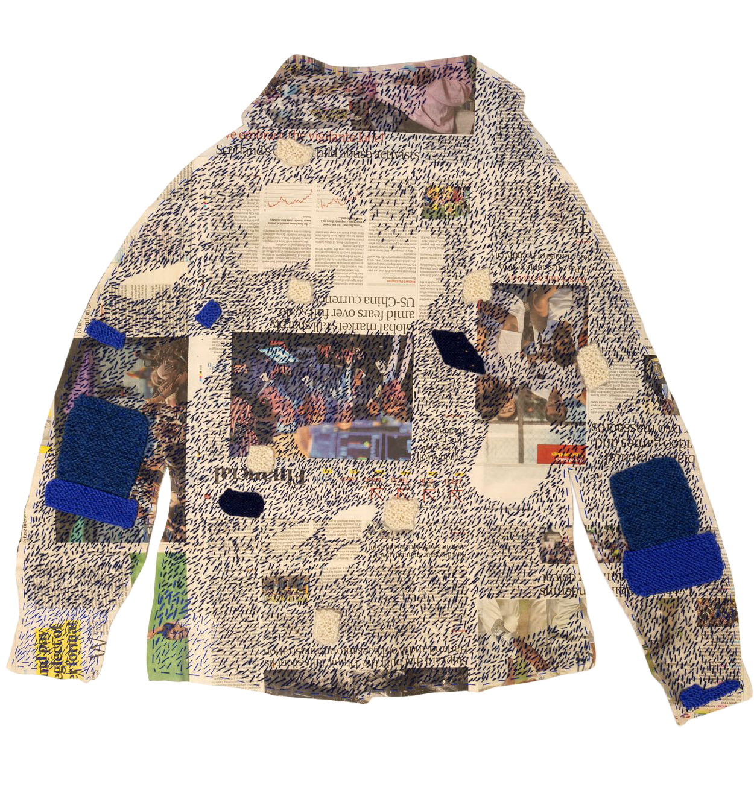
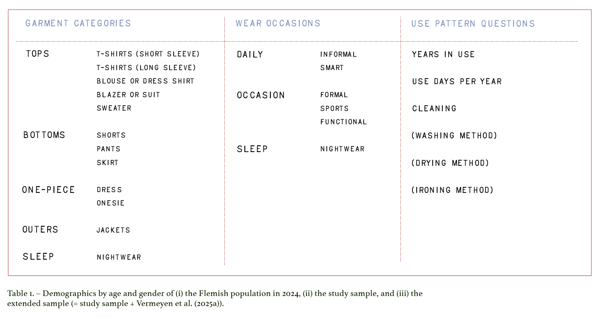
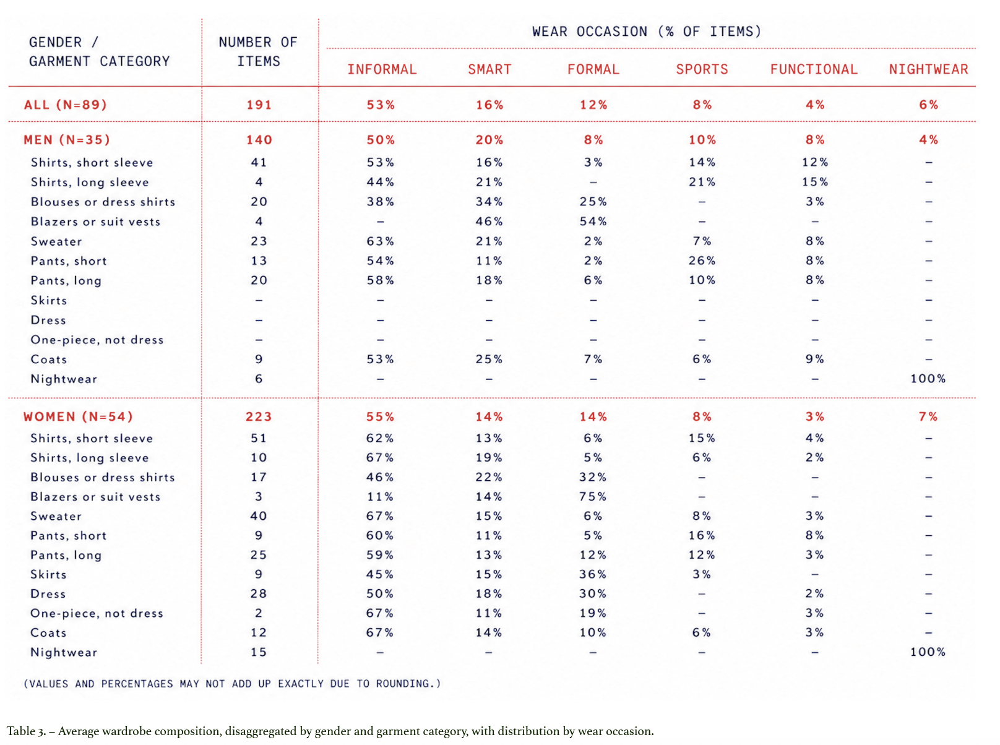

Empirical Insights on Use Time and Use Density
Veerle Vermeyen, Luc Alaerts, Ernst Worrell, Karel Van Acker, Filip Germeys

Celia Pym, "Elizabeth’s Paper Cardigan", 2020
Abstract
In response to the global environmental crisis, reducing the impact of production and consumption is essential. Within the clothing system, research and policy have focused primarily on sustainable production and end-of-life management, neglecting the use phase. Yet, understanding how garments are used—and how this varies across products and users—is essential to accurately assess environmental impacts and design effective interventions. This study analyzes data from in-person visits with 160 adult participants in Flanders (Belgium) to provide a comprehensive overview of garment service lifespans across 12 garment categories and 6 wear occasions using three complementary metrics: use time in years, use intensity in wears, and use intensity in washing cycles. The results reveal substantial variation both within and across garment types. For example, a t-shirt for informal use is kept on average four years, worn 33 times, and washed 18 times, whereas a t-shirt for formal use is kept five years but is worn only nine times and washed six times, while a coat for informal use is kept for five years, worn 136 times, but hardly ever washed. Even within garment types, the large observed interquartile ranges indicate pronounced heterogeneity in service lifespan. These findings demonstrate the importance of context-specific data on garment use to understand the function garments fulfil, a prerequisite to assess their environmental impact. By providing empirical insights into garment use behavior, this study informs researchers and policymakers in developing targeted strategies to promote a more sustainable clothing system.
Introduction
Clothing production and consumption contribute significantly to environmental degradation, including global warming and water pollution (European Environment Agency, 2022, European Commission, 2022; Niinimäki et al., 2020). In response to the ongoing global environmental crisis, already transgressing multiple planetary boundaries (Richardson et al., 2023), efforts to reduce our impacts are required across all sectors. To this end, the European Union (EU)—one of the world’s largest clothing markets—launched the EU Strategy for Sustainable and Circular Textiles in 2022 (European Commission, 2022). Its ambitions are implemented through policy instruments such as ecodesign requirements under the Ecodesign for Sustainable Products Regulation (ESPR), restrictions on textile waste exports under the Waste Shipment Regulation (WSR), and mandatory separate collection under the Waste Framework Directive (WFD). These measures primarily focus on sustainable production and improved waste management. However, environmental benefits will only materialize if they are accompanied by reductions in clothing production and consumption volumes (Maldini et al., 2025). This paper provides new insights into the consumption of garments. Consumption volumes are determined by how long individuals keep and use their garments. Designing effective consumption-oriented interventions therefore requires a robust understanding of clothing use by individuals (Guo and Kim, 2023; Laitala and Klepp, 2020; Polizzi di Sorrentino et al., 2016). Accurate characterization of garment use is also essential to assess the environmental impacts of apparel across its life cycle (Daystar et al., 2019). Extending the use time and intensity of garments is often proposed as one of the most effective strategies to reduce the sector’s environmental footprint (Cooper and Hill, 2013; Sandin et al., 2019; Wiedemann et al., 2021). Studies on the environmental benefits of strategies such as reuse or rental consistently find that such benefits are contingent on the extent to which these strategies actually effect an increase in the number of times garments are worn (Amasawa et al., 2025; Johnson and Plepys, 2021; Piontek et al., 2020; Zamani et al., 2017). Yet, empirical data to benchmark current use patterns remains scarce (Daystar et al., 2019; Gwozdz et al., 2017; Luo et al., 2023), and hence the understanding to what extent garment use can be intensified and extended. This lack of robust data hampers the development of effective policy interventions. The present study aims to advance the understanding of the use phase of garments by providing empirical data on garment lifespans and use intensity. The manuscript is structured as follows: Section 2 reviews the existing literature on garment lifespans to provide contextual background and identify knowledge gaps. Section 3 describes the method, providing insight into the data collection and processing steps. Section 4 presents the empirical findings on wardrobe size, wardrobe composition, and garment lifespans. Section 5 discusses the results in relation to prior research and considers the policy implications. Finally, Section 6 provides the overall conclusions.
Theoretical Background and Literature Review
Klepp et al. (2020) provide a framework to conceptualize and measure garment lifespans. They distinguish various key dimensions of clothing lifespans, including physical lifespan, social lifespan, and service lifespan. The physical lifespan denotes the duration a garment remains technically functional—from the end of production until it becomes worn out. The social lifespan encompasses the period during which a garment is considered socially acceptable to wear. The service lifespan combines these two, representing the entire time the garment is in use. It is effectively limited by either the physical or social lifespan—whichever is shorter—thereby determining the point of disposal (Klepp et al., 2020). Consequently, a garment’s service lifespan is determined by both its inherent properties and the decisions and practices of its users. Within a garment’s service lifespan a further distinction can be made between active and passive periods. Some garments are used only seasonally or even not at all. Previous research into the use phase of garments found that a fifth to a third of garments in wardrobes had not been used in the prior 12 months (Vermeyen et al., 2025a).
To gain insight into the service lifespan of garments, it needs to be measured. In essence, there are two main ways to express the service lifespan of garments: in use time or use intensity. Measurements of garment use time are typically expressed as the service lifespan of a garment in years (Klepp et al., 2020). The main drawback of measuring the use time is that it does not differentiate between active and passive use periods. For instance, in countries with distinct seasons, parts of the wardrobe may only be in use for parts of the year (Klepp et al., 2020). Hence, measurements of use time should be supplemented with measurements of use intensity, which express utility in the number of times that a product or service is provided (Corona et al., 2019; Oguchi et al., 2010). For garments, use intensity is typically expressed as the total number of times a garment is worn over its service lifespan. The number of times a garment is worn depends on various factors, including how many garments an individual owns and the frequency of occasions that allow for its use (Klepp et al., 2020). For instance, in warm climates the number of opportunities to wear a warm winter coat will be less than in cold climates. The number of wear occasions is further influenced by cultural and social practices, traditions, and value systems (Klepp et al., 2020). Alternatively, use intensity can also be expressed in the number of cleaning cycles over a garments service lifespan (Klepp et al., 2020). Cleaning practices, mainly washing and drying, can significantly impact a garment’s physical lifespan (Laitala et al., 2011). Hence, garments that are washed less frequently may last longer. Further, it is during garment cleaning practices that the majority of the environmental impacts in the use phase occur through the consumption of water, energy, and chemicals (Klepp et al., 2020). Finally, garments can have multiple users through gifting, trading, or resale. This makes accurately measuring the full service lifespan of garments even more challenging, as garments hold little to no traceable identifiers (Klepp et al., 2020).
Few studies have measured the service lifespan of garments (Laitala and Klepp, 2020), with most studies focusing on garment use examining maintenance practices, like washing and drying (Guo and Kim, 2023). A literature review on the service lifespan of garments reveals a fragmented body of evidence, consisting of technical reports and journal articles. WRAP, a UK-based non-governmental organization, conducted nationally representative online surveys among UK adults in 2013 (Langley et al., 2013) and 2021 (WRAP, 2022) to estimate the service lifespan of a wide range of clothing items. Both surveys report variability in garment lifespan – measured as use time in years – depending on garment category (e.g., t-shirt vs. coat), intended use (e.g., casual vs. formal wear), and the user’s demographics. Neither survey includes estimates of use intensity. Similarly, Payne et al. (2025) conducted a nationally representative online survey among Australian adults in 2024. They found variability in use time between garment categories and demographic groups (age, gender, and income), but do not consider use intensity. A series of academic articles report on data collected through an online survey administered by AC Nielsen in 2018 among 1.111 adults spread over five different countries (China, Germany, Japan, the UK, and the USA) (e.g. Klepp et al., 2019, 2020; Laitala and Klepp, 2020, 2021). Reported results include the number of items owned in specific categories, and for a selection of these items, details such as service lifespan, length of active use, wear occasions, materials and laundering practices. Laitala and Klepp (2020), applying multiple regression to the AC Nielsen dataset, studied the effect of four blocks of variables on a garment’s lifespan: (i) garment-specific properties (e.g., garment category or fiber composition), (ii) clothing practices of the user (e.g., wardrobe size, repair skills), (iii) patterns of garment use (e.g., cleaning frequency, wear occasions), and (iv) demographics of the user (e.g., age, gender, nationality, income). They found that for the use time (measured in years), all four aspects were approximately of equal importance, while for use intensity (measured in the number of wears) the patterns of garment use were most indicative. Gwozdz et al. (2017) conducted an online survey in 2016 in four western countries (Germany, Poland, Sweden, and the USA) to collect information about the purchase, use and maintenance, and discard patterns of adults. For the use and maintenance part the scope was limited to jeans and t-shirts, for which they report on the number of items respondents possessed, laundry related behavior, and the average use time and intensity. Daystar et al. (2019) conducted an online survey in six western countries (Germany, China, Italy, Japan, the UK, and the USA) using a market panel to characterize the use and laundering practices of t-shirts, knit collared shirts and woven pants. They provide data on the use phase of these three garment types over the 6 different regions, such as the garment lifetime in years in use, total number of wears, and number of washing cycles. Finally, Amasawa et al. (2025) conducted a consumer survey to gain insight into the use intensity of commonly rented garments, comparing private ownership with rental models. An overview showing the defining characteristics of all studies mentioned in this paragraph is given in the supplementary materials (SI_1).
In conclusion, most existing studies focus either on a narrow range of garment categories—predominantly shirts and pants—or report only use time in years, neglecting use intensity. Evidence on the service lifespan both in use time and intensity of garments across diverse garment categories, wear occasions, and user characteristics remains limited and fragmented. This study addresses this gap by providing a comprehensive overview of garment use across 12 garment categories and 6 wear occasions, including the service lifespans of garments using three different metrics—use time in years, use intensity in wears, and use intensity in washing cycles. This data was collected through detailed in-person interviews conducted by researchers at the home of participants in Flanders (Belgium). Particular attention is given to the variability in usage patterns observed within the data, going beyond summarizing the central tendencies of the data. By adopting a descriptive analytical approach, this study establishes a robust, consumer-based empirical baseline of garment service lifespans across garment types and wear occasions. These findings provide essential empirical evidence for advancing the understanding of garment use patterns and for informing stakeholders such as policymakers, product designers, and environmental impact modelers.
Method
Data on the service lifespan of garments were collected in conjunction with a wardrobe audit. The present study applies the same sampling strategy and wardrobe audit methodology as Vermeyen et al., 2025a, who conducted a wardrobe audit among 156 adults living in Flanders (Belgium) in 2024. Following their approach allows us to maintain methodological consistency and integrate their wardrobe audit data with our new data, creating a larger and more robust sample for analyzing wardrobe size and composition. The primary contribution of this article, however, lies in the collection and analysis of novel data on garment service lifespans across garment types and wear occasions.
3.1. Sampling To ensure methodological consistency with Vermeyen et al. (2025a), the same two-step sampling method was used. First, potential participants were recruited using a snowballing approach starting from the researchers’ network. Each potential participant was asked to fill out an online survey consisting of three parts: (i) their age and gender, to allow for a stratified sample selection, (ii) general questions on spending habits (time, money, and sustainability) regarding electronics, clothing, and food, to check for any bias in the sample towards clothing or sustainability, and (iii) after receiving more specific information about the research set-up, asking for consent to have a researcher come visit them at their home for the study. The resulting list of willing participants was stratified according to age and gender. Within each strata participants were selected based on the convenience of sampling. For example, as the wardrobe audits happened at participants’ homes, participants were selected so that researchers could reach multiple participants within the same day. Table 1 shows how the 160 participants selected for the study relate to the population in Flanders in 2024. The division between male and female participants aligns well with the population’s distribution. Female participants between 16 and 55 are slightly overrepresented, while female participants over 55 are underrepresented. For the reporting on wardrobe size (section 4.1) the observations from this study are merged with Vermeyen et al. (2025a). The resulting ‘extended sample’ is shown in the last column of Table 1.

3.2. Data collection The data collection took place in Flanders, the northern region of Belgium, or in the capital region of Brussels. Located in north-western Europe, between France and the Netherlands, the region is characterized by a relatively high population density, a temperate climate with four distinct seasons, and a generally high level of economic affluence. The data collection took place between January and March 2025. Each of the 160 selected participants was visited by one of four researchers. A detailed protocol was developed and formalized in Excel workbooks to ensure a consistent approach across researchers and visits. The protocol builds on the protocol established by Vermeyen et al. (2025a) and consisted of three sequential stages: (i) a preface, (ii) a quantitative wardrobe audit, and (iii) a set of questions on garment use practices.

3.3. Data analysis The data collected from the participants was processed using Python to generate three distinct datasets with: (i) participant background information, (ii) wardrobe audit results, and (iii) responses to the garment use questions. The datasets are connected through an unique number assigned to each participant. The data collected from two participants was incorrectly saved, resulting in 158 participants for dataset (i) and (ii). Additionally, the responses of one participant were excluded from dataset (iii) as the file had been incorrectly filled, resulting in 157 participants. The data analysis proceeded in three sequential steps, corresponding each to one section in the results (Sections 4.1 Wardrobe size, 4.2 Wardrobe composition, 4.3 Garment service lifespans): (i) characterization of wardrobe size, (ii) wardrobe composition by wear occasion, and (iii) garment service lifespan.
First, the wardrobe audit data were analyzed using statistical packages in Python to characterize differences in wardrobe size across demographic groups (Section 4.1). The results are presented using descriptive and inference statistics with regard to five variables: (i) total wardrobe size, (ii) the absolute number of dormant items in the wardrobe, (iii) the relative fraction of dormant items in the wardrobe, (iv) the absolute number of pre-owned items in the wardrobe, and (v) the relative fraction of pre-owned items in the wardrobe. The results reported are based on the extended sample (n = 314), which combines the dataset from this study with the wardrobe audit data collected by Vermeyen et al. (2025a) (see Table 1). For the inference statistics, a natural log transformation was applied to the total wardrobe size, the absolute number of dormant items, and the relative fraction of dormant items in the wardrobe to reduce right skewness and stabilize variance, thereby improving the normality of the distributions and homoscedasticity of the residuals. Following this transformation, parameterized tests (Student’s t-test and ANOVA) were employed under the assumption of approximate normality, as supported by the central limit theorem. For significant differences the effect size (Cohen’s d (d) or partial eta squared (η2)) is reported. The number of pre-owned garments per participant exhibited a zero-inflated distribution, with approximately 60 % of participants reporting possessing no pre-owned items (structural zeros) and the remaining 40 % displaying values that approximated a normal distribution after a natural log transformation. Hence, a two-step modelling approach was used: First, the probability of owning any pre-owned garment is reported using an odds ratio (OR) with the corresponding confidence interval (CI). The second part follows the same procedure as described above for the other variables to examine, among participants with at least one pre-owned item, the absolute number of pre-owned items and the relative fraction of pre-owned items in the wardrobe.
Second, audit data were combined with garment-use responses to present wardrobe composition by gender, garment category, and wear occasion (Section 4.2). The results are obtained by combining garment counts per category from the wardrobe audits with the distribution of garments across wear occasions from the garment-use questions. The analysis is based on 89 of the 160 participants in this study. This reduced sample results from a methodological choice: participants were only asked about garment categories with items in active use (see section 3.2), which prevented a full match between audit and garment-use results for those with only dormant items in certain categories. Due to this, the reported average wardrobe size in this section differs slightly from Section 4.1.
Third, garment-use responses were used to report on the cleaning frequency and service lifespan metrics (Section 4.3). Cleaning frequency was reported either as a number between 1 and 365 days or as “not washed yearly.” Consequently, only garments washed at least once per year are included in the cleaning frequency analysis. This was the case for most garments, except for a substantial fraction of the garment categories “blazers or suit vests” and “coats”. For the service lifespan of garments, two new variables were calculated, the number of wears and the number of cleaning cycles over a garments lifespan, using the formulas presented in Equation (1). For example, based on the answer sheet provided in SI_2, the participant owns approximately 16 short-sleeved shirts intended for smart use (30 short-sleeved shirts × 0.52 classified as smart). Short-sleeved shirts are estimated to be worn on average 100 days per year over a two-year period, resulting in approximately 13 wears per item ((100 × 2)/16) and six cleaning cycles (13/2). The results for cleaning frequency and service lifespans are first presented fully disaggregated: per variable, participant, garment category, and wear occasion. As most participants did not possess all 56 garment types—for example, most men owned no skirts or dresses, and some items such as “a blouse for sports” were extremely rare—measures of central tendency are only reported for garment types with at least 30 responses. For these, the median was chosen to report the central tendency due to the right-skewed distribution of the data. Following the disaggregated analysis, the responses were aggregated to a weighted average per participant based on their wardrobe composition. This approach accounts for the fact that some garment types are far more prevalent in wardrobes (e.g., t-shirts for informal daily wear) and ensures that the aggregated results reflect the garments that constitute the bulk of participants’ wardrobes. In doing so, the method provides a realistic picture of the cleaning frequency and service lifespan of garments as experienced by an individual, while capturing individual-level patterns relevant for understanding consumer behavior and demographic differences. It is important to note that this participant-focused aggregation addresses the question “How does a typical individual use their garments?”. An alternative, product-focused aggregation—answering the question “How is a typical garment used?”—is provided in the Supplementary Information (SI_5).
Equation (1) – Formulas for calculating a garment’s use intensity in wears and cleaning cycles.
Results
4.1. Wardrobe size
Fig. 1 summarizes the wardrobe audit results for the extended sample using boxplots. The corresponding descriptive statistics are provided in the supplementary information (SI_3). Fig. 1 reveals considerable variability in wardrobe size across individuals. On average, wardrobes contained 199 garments, of which 27 % had not been used in the prior 12 months and 5 % were pre-owned. However, the fraction of pre-owned garments warrants further nuance, as 58 % of participants reported having no pre-owned items in their wardrobes. When considering only participants who owned at least one pre-owned garment, the fraction pre-owned in the wardrobe increased to 11 %. A significant positive correlation between wardrobe size and amount of dormant items was observed (r = 0.74, p<0.001). When considering only participants with at least one pre-owned item, no significant correlation was found between wardrobe size and the number of pre-owned items, and only a weak correlation between the number of pre-owned and dormant items (r = 0.19, p = 0.028).

One-way ANOVA tests were conducted to examine if wardrobes differed across three age groups: young adults (age 16 to 35), middle-aged adults (age 36 to 55), and older adults (age >55). For wardrobe size no significant effect was found (F(2, 311) = 2.58, p = 0.078), indicating that wardrobe size did not differ across age groups. For the number of dormant items, a significant effect of age group was found (F(2,311) = 3.23, p = 0.041, η2 = 0.02). Post hoc comparisons using Tukey’s HSD test revealed that the number of dormant items in the middle age group was significantly greater than that in the oldest age group (p = 0.043), while no significant difference was observed between the youngest and other groups. For the relative fraction of dormant items no significant effect of age group was found (F(2, 311) = 2.99, p = 0.052). Younger participants had significantly higher odds of owning at least one pre-owned item than middle-aged (OR: 2.50, 95 % CI: 1.46–4.30) and older participants (OR: 7.13, 95 % CI: 3.70–13.75). Among participants with at least one pre-owned item, no significant effect of age group on the number of pre-owned items was found in either absolute (F(2,129) = 1.11, p = 0.332) or relative terms (F(2,129) = 0.73, p = 0.486).
Participants with at least one pre-owned item had larger wardrobes (t(314) = 2.41, p = 0.017, d = 0.27), but this effect disappeared after adjusting for gender. The initially observed association appears attributable to gender rather than pre-owned ownership, since women are both more likely to report owning at least one pre-owned garment and were found to have larger wardrobes sizes. Similarly, the higher number of dormant items among participants with at least one pre-owned item becomes insignificant when accounting for gender.
Table 3 presents the average wardrobe composition disaggregated by gender, garment category, and wear occasion. ‘T-shirts, short sleeve’ is the most common garment category in both genders’ wardrobes. Approximately half of garments in wardrobes are perceived as informal everyday wear. The remainder is mostly smart everyday wear (16 %), then formal wear (12 %), sportswear (8 %), nightwear (6 %), and lastly functional wear (4 %). In general, men have a slightly higher fraction for smart wear and sportswear. Finally, ‘blazers and suit vests’ is the only garment category where informal everyday wear is not the dominant category.
Table 3. – Average wardrobe composition, disaggregated by gender and garment category, with distribution by wear occasion.

4.3. Garment service lifespans This section presents the results on garment service lifespans using three complementary metrics: use time in years, use intensity in wears, and use intensity in washing cycles. To reiterate, each of these metrics of service lifespan refer to the full lifespan of a garment.
4.3.1. Garment service lifespans by garment category and wear occasion
Fig. 2 provides garment service lifespans by garment category and wear occasion, while SI_4 gives a table with descriptive statistics. For use time, wear intensity, and cleaning intensity the dataset comprises of 2592 datapoints across the 56 garment types. For cleaning frequency, the number of observations is slightly lower (2,366) due to the exclusion of garments not washed at least once per year. Fig. 2 reports the median only when at least 30 datapoints are available for a given garment type. Because the set of respondents varies across the 56 combinations of garment category and wear occasion, only descriptive results are presented in the remainder of this sectionp> Use intensity in wears - The median ranges from 5 wears for ‘formal dresses’ to 151 wears for ‘nightwear’. Informal and smart coats also have a notably higher wear intensity. When available, the median for formal use is always notably lower than for the other wear occasions, while the wear intensity of garments for sports tends to be higher. About one in five estimates are below 10 wears for a garment. A small number of extreme cases are observed (18 datapoints), where garments were reported to have been worn over 1000 times. These outliers may reflect inaccurate estimates from respondents, but their influence on the analysis is minimized by focusing on median values.
Cleaning frequency - The median ranges from 1 to 100 wears before cleaning. On average, tops worn next to the body (e.g., t-shirts) are washed the quickest after 1 or 2 wears, while midlayers (e.g., sweaters) and bottoms (e.g., pants) are worn 2 to 5 times before cleaning them, nightwear is washed weekly, while outerlayers (e.g., coats) are washed rarely.
Use intensity in cleaning cycles - The median ranges from 0 for ‘coats’ to 42 for ‘sports T-shirts, long sleeve’. Garments use for sports and nightwear have a notably higher number of cleaning cycles. About two in five estimates indicate less than 5 cleaning cycles for a garment, mainly coming from ‘coats’, ‘blazers and suit vests’.
4.3.2. Garment service lifespans - aggregated to the individual Fig. 3 shows the aggregated average per participant for the cleaning frequency and each of the three variables of garment service lifespans (use time in years, wear intensity, cleaning intensity). The figure depicts both the overall mean and median per participant, along with comparisons by demographic characteristics (gender and age), garment category, and wear occasion. Due to the right-skewed nature of the data, the x-axis is displayed on a logarithmic scale to facilitate visual comparison.

Nenna Okore, "Serendipities", 2024
Next, for the use intensity expressed as number of wears, we find an overall median of 35 wears. For men this is higher (45 wears) compared to women (25 wears). With 48 wears, the oldest age bracket use their garments more intensely compared to 26 wears for the youngest age group and 28 wears for the middle age group. Strong differences can be observed between the garment categories, ranging from nine wears for ‘blazer and suit vests’ and ‘dresses’ to respectively 129 and 159 wears for ‘coats’ and ‘nightwear’. For garment use, formal garments are worn notably less, with a median of only seven.
Participants reported cleaning their garments after a median of three wears. No differences in the median cleaning frequency are observed across gender or age groups. Garments worn close to the upper body - such as shirts, blouses, and dresses – are laundered most frequently, typically after just two wears. In contrast, outer layers (coats) are worn substantially longer before washing, with a median of 60 wears, if washed at all. When analyzed by garment use, nightwear is washed notably less frequently, about weekly (median of seven wears).p>
Finally, for the use intensity expressed as number of washing cycles, we find an overall median of nine cycles. For men this is again slightly higher, with 14 cycles compared to eight cycles for women. Also here the oldest age bracket stands apart with a higher median of 16 cycles. When it comes to garment categories, ‘nightwear’ goes through the most cycles with 24, and ‘coats’ and ‘blazer and suit vests’ the least with zero. Garments for formal occasions are cleaned notably less over their service lifetime, with a median of only three, while this is notably higher for ‘sportswear’ and ‘nightwear’ (resp. 21 and 24 cycles).
Discussion
5.2. The service lifespan of garments The present study provides a comprehensive overview of garment service lifespans across garment categories, wear occasions, and user demographics, reporting on both use time and use intensity. Our results show how the three service lifespan metrics (years, wears, and cleaning cycles) offer important complementary insights. Use time, expressed in years, is the most widely used metric, and the most straightforward for individuals to recall. However, it does not distinguish between active and passive use. Our findings show that while garments across categories tend to have similar use times, this masks substantial variations in use intensity. For example, a t-shirt for informal use is kept on average four years, worn 33 times, and washed 18 times, whereas a t-shirt for formal use is kept five years but is worn only nine times, and washed six times. Hence, including use intensity measured in wears is required to understand the functional utility provided by a garment. Finally, the number of cleaning cycles a garment undergoes offers another dimension of use intensity. This metric is particularly relevant to assess the environmental impact of the use phase of garments. However, for garments that are rarely washed between uses — such as coats — this metric offers little insight on the use intensity. Even within a garment type service lifespans vary, with men and older participants tending to use garments more intensely.
To situate our findings on the service lifespan of garments, we compare them with the existing research discussed in the literature review and summarized in SI_1. Such a comparison is not straightforward due to methodological differences between studies. For instance: WRAP (2022) included short-lived items (e.g., socks, underwear) that were excluded from the present study. Klepp et al. (2020) logged only 10 items per garment category per participant, potentially skewing the overall estimates, since the cap likely includes all a participant’s coats, but not all shirts. Next, while we report medians due to data skewness, other studies present means without addressing the underlying distributional properties. Finally, Daystar et al. (2019) found differences in garment service lifespans across countries, indicating that regional context should be considered when interpreting the results. Based on climate and consumer culture, the regions most comparable to Flanders (Belgium) in the existing literature are the UK and Germany. All these aspects are important to bear in mind when reading the discussion that follows.
This study found that, on average, an individual expects to use their garments for five years, consistent with previous estimates (i.e., WRAP (2022): 4.3 years, Klepp et al. (2020): 5.2 years). Our results indicate shorter use times among women and the youngest age group (16–35 years), while WRAP (2022) found no gender differences and that the middle age group (35–54) kept their garments the shortest. Our category specific estimates align largely with WRAP (2022) and Gwozdz et al. (2017), while Daystar et al. (2019) and Amasawa et al. (2025) report shorter use times for T-shirts (resp. 3.1 and 2.9 years) and knit collared shirts (3.3 years). Regarding the wear occasion, WRAP (2022) reports that casual wear has the highest longevity across most garment categories.
Next, according to our results, an individual expects to wear a garment, on average, 35 times. This is considerably less than the 76 to 105 wears estimated by Klepp et al. (2020). Two factors may account for this discrepancy: Firstly, Klepp et al. (2020) covers a broader range of garment categories, including intensely used items such as socks. Secondly, the potential overrepresentation of high-use items such as coats discussed above. For specific garment categories, our findings are in line with Gwozdz et al. (2017) estimates for T-shirts (36 wears) and jeans (48 wears), as well as Johnson and Plepys (2021), who report about three wears for formal dresses. Amasawa et al. (2025) find significantly higher wear intensities across their garment categories. For example, they find T-shirts to be worn 262 times over 2.9 years. Achieving this level of use would require wearing a T-shirt roughly once every four days. While cultural differences may partly account for this, Daystar et al. (2019) report 63 wears for T-shirts in Japan, which is higher than our estimate of 33 wears, but still far below Amasawa et al. (2025). Laitala and Klepp (2020) found, like us, that garments used for formal occasions are worn the least, and garments for sleeping the most.
Finally, our study found that, on average, an individual will clean a garment about nine times. No comparable overall estimate is available, but category-specific results align with prior estimates by Gwozdz et al. (2017) for t-shirts (22 cycles) and jeans (6 cycles), and by Daystar et al. (2019) for T-shirts (17 cycles), knit collared shirts (22 cycles), and woven pants (24 cycles). In contrast, environmental impact assessments often assume substantially higher cleaning frequencies. For instance, the assumed lifetimes of garments in number of washing cycles in Beton et al. (2014) is considerably higher than in this study (e.g., 50 vs 16 washes for a T-shirt), demonstrating the importance of consumer-based data.
To summarize, this section compared our findings on the service lifespans of garments across garment categories, wear occasions, and user demographics to the available literature. We bundle the findings of a scattered body of data on service lifespans of garments and compare it to a single reference. By doing this we provide a well grounded baseline for future researchers to use or compare their own findings to.
5.3. Implications of findings on service lifespans The empirical data on the service lifespan of garments can help consumers, brands, and governments make informed decisions. A key insight from this study is the substantial variation in garment use intensity both across and within groups of individuals, garment categories, and wear occasions. This variation underscores the need for more nuanced modelling of the use phase in environmental impact assessments. Garments are designed, marketed, acquired, and worn with specific occasions in mind (Klepp et al., 2020). Hence, their service lifespan depends on this context. For example, formal garments may have limited opportunities for wear (Klepp et al., 2020), resulting in the observed lower use intensity. To accurately assess the environmental impact of a garment we must move beyond generic assumptions and incorporate detailed, context-specific data on garment use to correctly model what function a garment fulfils (Laitala et al., 2018). This is currently lacking in most environmental impact assessments. For instance, the EU’s Product Environmental Footprint Category Rules for Apparel and Footwear (PEFCR A&F) uses a default number of wears per garment category, not accounting for variations between wear occasion or users (Technical Secretariat of the PEFCR for Apparel and Footwear, 2025). The PEFCR A&F (version 3.1) does acknowledge that more robust consumer studies are required to reduce the uncertainty of their values. This study is a step forward towards a more detailed understanding of the use phase of clothing.
Moreover, the observed differences in cleaning frequency and service lifespan highlight the importance of understanding the role of consumer behavior in shaping the environmental footprint of garments. Current environmental policy for consumer goods often focuses on product durability, but this will yield environmental benefits only if it is also accompanied by a decrease in production and consumption volumes (Maldini et al., 2025). Monitoring the clothing stock and service lifespan of garments over time is essential to assess whether the second condition is being met. Further, this study provides data that can underpin educational campaigns or nudging strategies aimed at intensifying the use of garments. Increasing the reuse of garments is already gaining traction, but must be approached with caution. Reuse should not lead to additional consumption or result in garments becoming dormant items in wardrobes. In general, environmental initiatives would benefit from a more holistic approach that goes beyond product-focused assessments and considers the whole system. The question then becomes how society meets its clothing needs, which opens the door to exploring alternative ways of fulfilling them. For example, our findings show that garments intended for formal occasions are typically worn only a few times over their service lifetime. This suggests that alternatives to individual ownership, such as shared use, may offer significant potential.
5.4. Limitations and future research This study presents a novel and extensive set of empirical data on garment service lifespans. Yet some limitations must be acknowledged. First, the reliance on self-reported data introduces potential biases, in particular “recall bias”. For instance, research by Klint et al. (2023) found discrepancies between reported and observed behavior for washing and drying practices. Vermeyen et al. (2025a) found that participants tend to underestimate how may garments they possess. A distinctive strength of this study, however, is that questions on garment use were asked after the wardrobe audit. As a result, participants had just reviewed their entire wardrobe in detail, providing a concrete and up-to-date reference point when formulating their estimates—an advantage compared to previous online surveys on garment use. Although structured protocols and in-person audits were employed to mitigate potential biases, future research could benefit from passive data collection methods—such as RFID tracking or digital wardrobe applications—to obtain more objective usage data. To assess the validity of the obtained estimates, the supplementary information (SI_6) contains a rough “back-of-the-envelope” calculation to contextualize the feasibility of our estimates. This analysis suggests that both men and women use approximately one garment per day to cover respectively their upper and lower body, while estimates for midlayer and outer garments are lower then one, as would be expected in a temperate climate with four distinct seasons. Second, the in-person study approach, while valuable, is time-intensive and consequently limited the sample size and geographical scope. The results would benefit from additional studies across socioeconomic, cultural, and regional contexts. Third, the study does not capture intra-category variability, such as differences in usage patterns between favorite and disliked items, expensive and cheap garments, or variations in the fiber composition of garments. These factors were excluded to avoid overburdening respondents and risking response fatigue. Future research could investigate variation within garment types, and explore consumer segments and behavioral archetypes to better tailor policy and design interventions. Here lies an opportunity for complementary qualitative research. While quantitative data provide breadth, qualitative research is essential for understanding the subjective meanings and emotional attachments that influence clothing use more deeply. Fourth, this study focused on single-user lifespans, while garments can have multiple users through resale, donation, or gifting. The current low prevalence of pre-owned garments in wardrobes (see section 4.1) suggests that our estimates are representative of full service lifespans. However, as increasing reuse is currently a policy aim in many western countries, it may soon become essential to track garments across multiple users. This would require additional information, potentially coming from digital product passports. Finally, the study’s cross-sectional design captures a snapshot of garment use but does not account for temporal changes. Longitudinal studies are better suited to understanding how usage patterns evolve over time and in response to interventions or life events, but ask substantial and sustained participation from participants.
Conclusion
Transitioning to a sustainable clothing system requires grounding interventions in real-life usage patterns. This study contributes to that goal by providing empirical data on garment service lifespans across garment categories, wear occasions, and user demographics, using three complementary metrics: use time in years, wear intensity, and cleaning intensity. Together, these measures offer a nuanced understanding of how garments function in everyday life. For instance, our findings reveal that garments with similar lifespans in years can differ significantly in wear or cleaning intensity. Our study also highlights substantial variation in garment use across user groups, with men and older individuals generally using garments more intensively. Ultimately, a one-size-fits-all approach to sustainability in clothing is unlikely to be effective. Garments serve diverse functions, and their use is shaped by context-specific behaviors. Policies and interventions must reflect this diversity, targeting specific garment types, user groups, and usage contexts. This study lays the groundwork for more informed and effective strategies to reduce the environmental impact of the clothing system. Future research should continue to explore how clothing use varies across contexts and how systemic changes—such as alternative ownership models or behavioral nudges—can support a more sustainable clothing system.